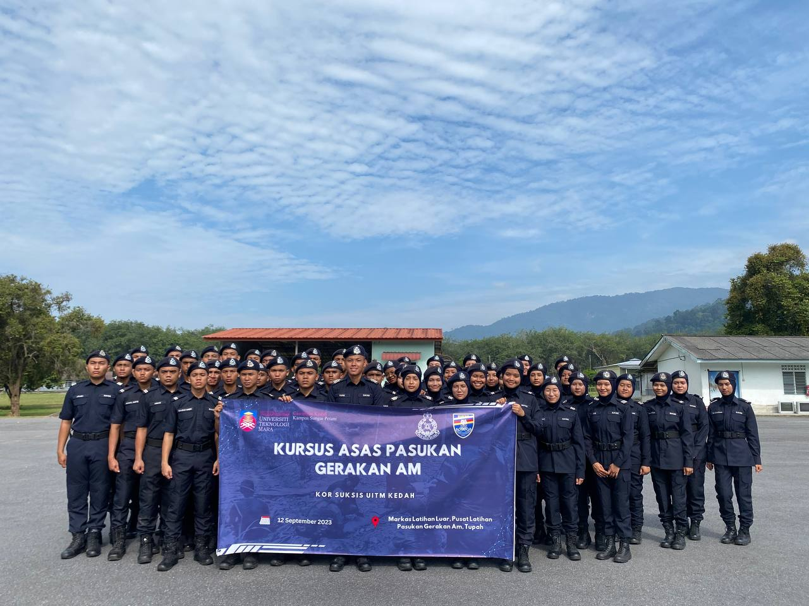
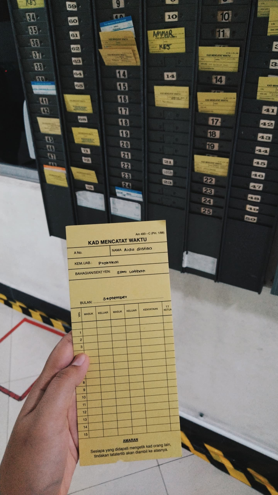
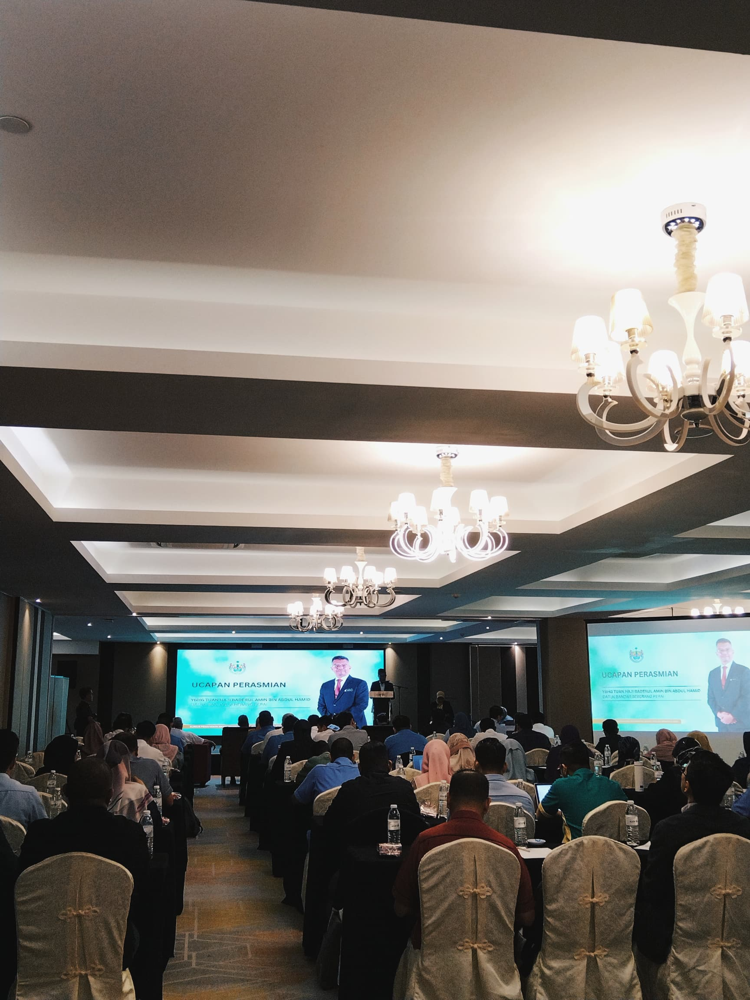

KURSUS ASAS PERTOLONGAN CEMAS
This photo was taken during my participation in the Basic First Aid Course (KAPC) under the SUKSIS Corps. The course is one of the mandatory requirements I must complete to fulfill the SUKSIS syllabus. KAPC is a collaboration between SUKSIS and the Malaysian Fire and Rescue Department in Sungai Petani, Kedah. In this session, one of the activities we engaged in was learning fire extinguishing techniques as part of fire rescue training. We practiced using a fire hydrant under the guidance of their officers. It was an exciting and eye-opening experience for me, as I got to feel how heavy the fire hose is and learned the proper method to extinguish a fire.
KURSUS ASAS KEMAHIRAN MENEMBAK DAN KESELAMATAN SENJATA API
This photo was taken during my Basic Shooting Skills and Firearms Safety Course, which is a compulsory SUKSIS course held at the Shooting Range in Kedah. During the course, I used both the Revolver and M16 firearms. I found myself more skilled with the Revolver, as my shots were more accurate, earning me a high score with this weapon. This course was an amazing and meaningful experience, as not everyone gets the chance to enjoy such an opportunity.
KURSUS ASAS PASUKAN GERAKAN AM

This photo was taken during the Basic General Operations Force Course (Kursus Asas Pasukan Gerakan Am) at Kem PGA Tupah, a 5-day mandatory SUKSIS training program. I attended this course during my semester break in Semester 3. It was an amazing experience where I got to do and learn so many things, including hiking, building shelters, sleeping in the forest, cooking in groups, attending classes, and training with the instructors there. Although it was exhausting with limited rest, dealing with leeches and other insects, and even facing water issues that left us unbathed (HAHAHA), it was truly a valuable experience. A huge thank you to all the instructors for their guidance!
INDUSTRIAL TRAINING
 During my semester 4 break, I was required to undergo an industrial training as it was one of the subjects for the semester. I completed my internship at the Seberang Perai City Council (MBSP), Penang, near my home. The internship lasted for 8 weeks, and I successfully completed it with flying colors. It was a truly valuable experience as I got to immerse myself in the work environment at MBSP and prepare for entering the workforce after graduation. At MBSP, I was placed in the Human Resource Management department under the Human Capital Development section. Here, I managed records and coordinated employee training courses, supported by the helpful and welcoming staff in the department. They were always ready to assist me, making my internship journey a memorable one.